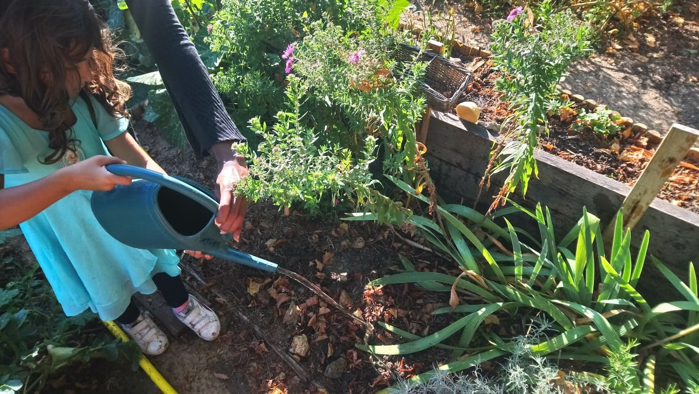
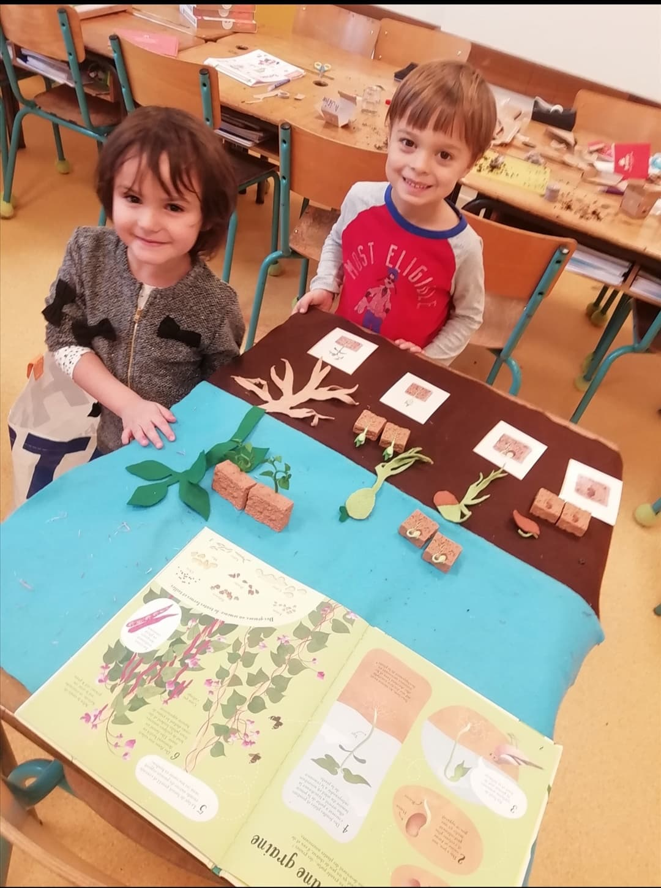

Se connecter à la nature et à soi
Nous proposons aux enfants de 3 à 10 ans des ateliers de découverte de la nature au fil des saisons.
• Entreprises • Ecoles • Lieux de loisirs •
Tous ceux qui souhaitent s’engager
Notre vision
Bien-être
Nous accompagnons chaque enfant à mobiliser ses propres ressources de bien-être à travers la découverte des émotions, les pratiques de l’attention et la méditation.
Biodiversité
Nous invitons chaque enfant à explorer le vivant, comprendre les et prendre soin


Bien-manger
Nous proposons aux enfants de découvrir les produits de saison et propageons le plaisir de cuisiner local et de saison. Éveiller les papilles, éveiller les sens, revisiter les produits oubliés
Votre potager au fil des saisons
Dans votre école nous vous accompagnons dans la création, l’exploration et l’entretien de votre potager.
En intérieur et en extérieur, les enfants cultivent dans des sacs : des fruits, des légumes, des aromates et des fleurs comestibles au fil des saisons
Comment ça marche?
planter
Sélectionnez vos légumes, vos fruits, vos fleurs comestibles et aromates
déguster
Récoltez & Régalez vos papilles, Récoltez & Régalez vos papilles
Conçu par et pour les enfants
Le potager est adapté à la morphologie des enfants et leur permet d’acquérir les gestes de jardinage dès 2 ans.
Adapté aux petits espaces
Transportable, le potager s’adapte à tous vos espaces, meubles, cours.
Personnalisable
Scratcher - déscratcher à l’infini vos motifs selon l’envie des enfants et créer un potager qui vous ressemble avec des tissus de récupération.
Ultra-résistant
Les sacs ont une durée de vie de minimum 6 ans et sont composés de matières tissés très solide.
Nos Formules
DECOUVERTE
Le potager, tout simplement
12€ HT/enfant (1h)
ESSENTIELLE
Le potager, un atout essentiel
15€ HT/enfant (1h30)
EXPLORATION
Un moment incontournable
25€ HT/enfant (2h30)
confectionner
Choisissez votre taille (mini, moyen ou maxi) et personnalisez votre potager